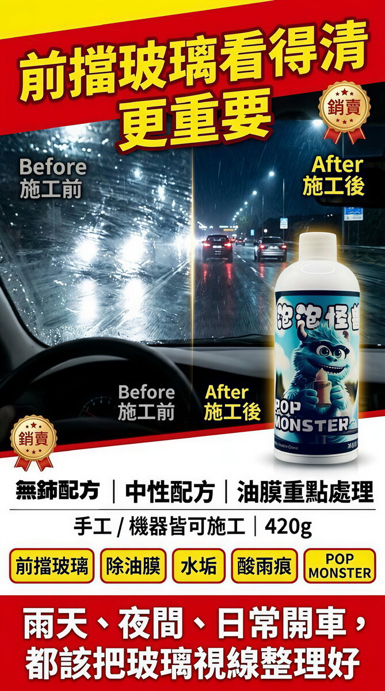

无铈玻璃油膜去除膏
无铈玻璃油膜去除膏，清外层玻璃的油膜、水垢和酸雨痕。雨天前挡起雾、会车觉得刺眼时用。
加入购物车 → 填收件资料 → 用 WhatsApp 送出订单；每款能不能寄到你的国家、运费多少，小编会先在 WhatsApp 确认，再请你付款
产品说明
雨天前挡一片雾、晚上会车觉得对向灯光特别刺眼、雨刷刷过还是留一道白痕，多半是玻璃外层积了油膜和水垢。这支用非稀土（无铈）的低硬度自破碎研磨颗粒搭配中性基底，不靠酸性腐蚀，用在汽车前挡、侧窗、后挡等外层玻璃，清除顽固油膜、长期累积的水垢与酸雨残痕。清洁速率偏稳健，顽固的地方重复施作，不要急着加大力道。
规格
- 稀释比例
- 不稀释，原液直接使用
- 适用材质
- 汽车前挡风玻璃、侧车窗、后挡风等所有外层玻璃
- 机型适用
- 手工擦拭、专业机具抛光双模式皆可
- 搭配耗材
- 玻璃油膜羊毛毡（建议搭配原厂配套工具耗材施工）
怎幺用
- 预处理：先把玻璃表面照一般方式清洗干净，并把水收干。
- 检查杂质：确认玻璃表面有没有铁粉，有的话先用铁粉去除剂清洗，冲水收干后再检查一次。
- 若玻璃脏污比较严重（飞漆、树胶、铁粉），建议先用火山去污泥走一遍。
- 清除颗粒物：若仍摸得到颗粒，用磨泥黏土搭配润滑液去除，再冲水收干，确认玻璃表面零颗粒物，才可以开始去油膜水垢。
- 施工：保持玻璃湿润，取本品以画圈方式涂抹玻璃，手工擦拭或机具抛光都可以。
- 静置约 2 分钟后，用清水彻底冲洗干净。
- 顽固污垢请重复施作，切勿急躁加大力道。
- 验收：用一条干净无油脂的微湿毛巾擦拭玻璃，如果油膜已清干净，无论怎幺擦都不会留下印记。
注意事项
- 施工全程保持玻璃湿润，严禁干擦干磨。
- 禁止强力暴力擦拭。
- 上剂前必须确认玻璃表面没有任何硬质杂质颗粒（铁粉、砂粒），才可以开始去油膜水垢作业。
- 玻璃一旦被颗粒刮伤无法靠抛光救回，只能整片更换，所以前面的检查与清颗粒三步不可以跳。
- 顽固污垢请重复施作，不要用加大力道的方式硬推。
- 本品界定为汽车外层玻璃使用；车内侧玻璃、隔热膜与胶条等周边材质，我们手上没有兼容性数据，请避开或先在不显眼处小范围测试。
- 本品未提供成分表与安全数据表（SDS），pH 值也未标示；施工时建议配戴手套、保持通风，避免长时间接触皮肤。
- 若不慎溅入眼睛，请立即以大量清水冲洗，有不适请就医。
- 请置于阴凉干燥处保存，避免阳光直射与高温，放在儿童与宠物拿不到的地方；用完带下车，不要长时间放在车内。
常见问题
油膜是沥青、硅油蜡、废气附着在玻璃上形成的油脂层，让视线在雨天模糊、迎光视角严重眩光。判断方式：夜间迎面灯光看起来特别刺眼、雨天雨刷刮过后留痕，就是有油膜。
差别很大。一般玻璃清洁剂只能去除浮面灰尘和水渍，对油膜完全无效。油膜去除膏含有特殊研磨成分，能物理研磨去除附着的油脂层，效果完全不同。
视行驶环境，一般 3–6 个月做一次。台湾常走高速公路、隧道的车辆，因废气和油脂污染较重，建议 2–3 个月做一次。施工后配合镀膜可延长保护。
同类商品


无铈玻璃油膜去除膏
确定要买就加入购物车，用 WhatsApp 送出订单；还不确定适不适合你的车，先在 WhatsApp 问清楚再下单。